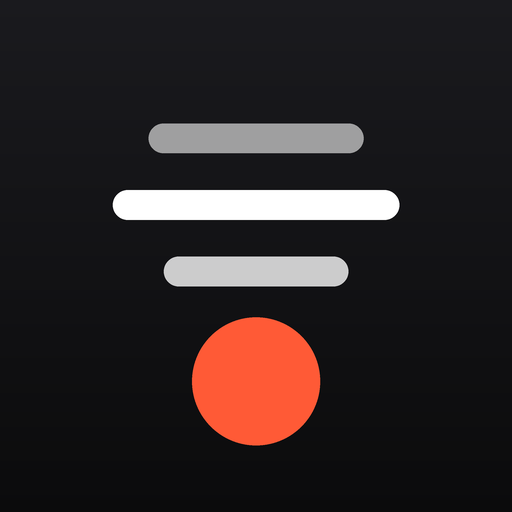
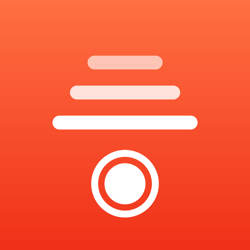
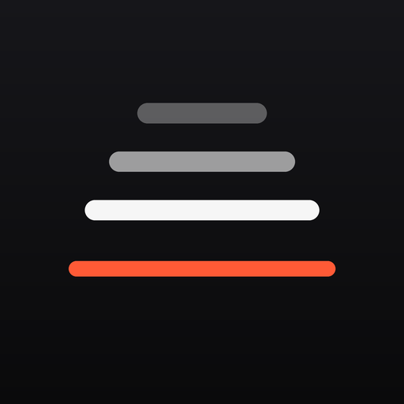

Три варианта. Показаны так, как iOS покажет их на домашнем экране — со своим скруглением, на светлых и тёмных обоях. Внизу каждого — размер фавикона, чтобы проверить читаемость в мелком виде.
Тёмная, спокойная. Строки суфлёра и оранжевая кнопка записи под ними. Не спорит с обоями, выглядит «системно».

Суфлёр тёмные обоиЯркая, заметная на экране среди прочих. Строки уходят вверх с сужением, под ними — кнопка записи как в камере.

Суфлёр тёмные обоиПро саму идею приложения: текст «подъезжает» к оранжевой линии чтения — той самой, на которую падает взгляд у камеры. Самая лаконичная.

Суфлёр тёмные обои